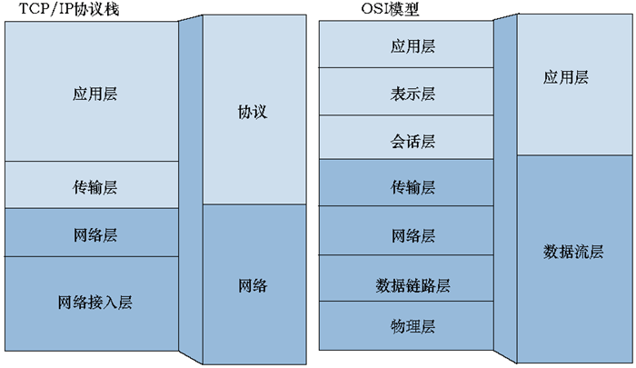
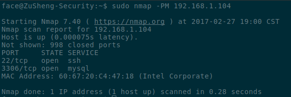

Nmap为笔者最常接触的网络安全工具。在此展示一些常见的用法。
此教程包含下列领域
Nmap (“Network Mapper(网络映射器)”)是一款开放源代码的网络探测和安全审核的工具。 它的设计目标是快速地扫描大型网络，当然用它扫描单个主机也没有问题。
Nmap以新颖的方式使用原始IP报文来发现网络上有哪些主机，那些主机提供什么服务(应用程序名和版本)，那些服务运行在什么操作系统(包括版本信息)， 它们使用什么类型的报文过滤器/防火墙，以及一堆其它功能。
虽然Nmap通常用于安全审核，许多系统管理员和网络管理员也用它来做一些日常的工作。
对于安全审核方面，Nmap通常用在资讯搜集阶段，用于搜集目标主机的基本状态资讯。扫描结果可以作为漏洞扫描、漏洞利用和权限提升阶段的输入。例如，业界流行的漏洞扫描工具Nessus与漏洞利用工具Metasploit都支援匯入Nmap的XML输出格式，而Metasploit框架内也整合了Nmap工具（支援Metasploit直接扫描）。
功能:
歷史资料
安装
sudo apt-get updatesudo apt-get install nmap 手动编译安装(适用于Linux)
步骤 1(下载源码包):
wget https://nmap.org/dist/nmap-7.40.tar.bz2
步骤 2(解压源码包):
tar xvf nmap-7.40.tar.bz2

步骤 3(进入目录):
cd nmap-7.40/
步骤 4(建立编译档案):
./configure
步骤 5(编译):
make
步骤 6(安装):
sudo make install
步骤 7(测试，展示版本名):
nmap --version
首先，我们必需确定我们的目标是在局域网内还是在广域网呢? 当我们与目标身处在同一局域网内时，我们可以直接对其施行完整的端口扫描，无须考虑端口被交换机或路由器屏蔽的问题。但若目标处于广域网时，我们必须考虑上述问题。因为广域网上的IP地址可能被多台主机共用，这时我们只能透过对端口进行更详密的探测(例:端口上运行的服务状态,服务版本)，此时Nmap强大的服务版本探测，旗帜攫取功能便派上用场。
现在我们必须理解一些网络的基础协议。 这是一张OSI(Open System Interconnection)模型图，是国际标准化组织(ISO)提出的一个试图使各种计算机在世界范围内互连为网络的标准框架。
注意上图中的第四层(传输层)，传输层(TPDU,Transport Protocol Data Unit)负责了端对端的连接。该层包含最重要的TCP及UDP协议。
TCP(Transmission Control Protocol)和UDP(User Datagram Protocol)协议皆建立在网络层上，而网络层上最常用的协议就是IP。这就是为什么有TCP/IP这种说法，UDP/IP说法则较为少用。网络层IP提供的是一种不可靠的服务。也就是说，它只是尽可能快地把分组从源结点送到目的结点，但是并不提供任何可靠性保证。虽然TCP使用不可靠的IP服务，但它却提供一种可靠的运输层服务。
网络协议通常分不同层次进行开发，每一层分别 负责不同的通信功能。一个协议族，比如TCP/IP，是一组不同层次上的多个协议的组合。 
TCP与UDP的不同:
TCP内的协议: HTTP, HTTPs, FTP, SMTP, Telnet
UDP内的协议: DNS, DHCP, TFTP, SNMP, RIP, VOIP
最后，你必须知道Nmap扫描后端口回传的状态意思。
Nmap扫描后回覆的端口状态有六种，如下-->
open :
该端口正被应用程序使用。
closed :
端口回应了扫描，当前并没有应用程序在使用该端口。
filtered :
扫描可能被防火墙设备,路由器规则,或软件防火墙过滤。
unfiltered :
扫描未被屏蔽，但Nmap无法决定该端口的状态。这是最少见的情况。
open/filtered :
Nmap无法确定端口是开放或屏蔽的。例子:开放的端口不回覆扫描。
close/filtered :
Nmap无法确定端口为关闭或未被过滤的。
在此教程中，我将以http://scanme.nmap.org/及本地IP当作目标，前者是Nmap官方提供的合法扫描对象。
指令一:预设的扫描模式(不带参数):
nmap scanme.nmap.org
该指令将会扫描目标上超过1660个TCP端口。
在Nmap的预设模式中，若当前用户没有足够的权限去使用原生端口，
则会使用TCP连接模式(也就是 -sT)。反之，则使用TCP SYN模式(-sS)端口扫描。
SYN模式比TCP连接模式快(且较为隐密)，因为SYN模式下的Nmap不会完成TCP三次握手连接。所以一次可以对上千个端口快速扫描。
指令二:在Nmap中储存输出的结果:
nmap scanme.nmap.org -oA output
Nmap会输出上列三个档案到当前位置(也可指定特定格式)。
-oN)-oX)-oG)指令三:扫描端口上的服务
nmap -sV scanme.nmap.org
如上图所示，nmap显示了当前端口运行的服务。
可以添加--reason选项，它会在输出结果加上TCP连接的回覆。
nmap --reason -sV scanme.nmap.org
如下图。
syn-ack表示我们成功接收该端口的回覆。
no-response代表着该端口的回覆没给我们任何的回覆(filtered)。
syn-ack对应到下图中的第二次连接。
指令四：使用Nmap探测主机作业系统(需要较高权限)
nmap 127.0.0.1 -O
用途：Nmap会自动针对目标主机端口上运行的服务进行探测，并且会在指纹资料库(nmap-os-db)中比对。有时准确度不高，但Nmap可以自动猜测最接近的类型。上图中，我们还得到了目标主机的Mac地址(必须在同一区网)。Device type为装置类型，Running为工作系统，OS CPE指的是Common Platform Enumeration(常见系统枚举)，OS details展示了该主机可能运行的系统，Network Distance则为网络距离(经过的路由数)。
指令五：使用Nmap对大量IP进行DNS反向查询
nmap 64.233.189.130-139 -sL
用途：可在得知主机上缐情况的同时，查询目标DNS名称。此方式不会发送任何封包到目标主机。
指令六：使用Nmap追踪到目标主机的路径(需要较高权限)
nmap --traceroute 192.168.1.104
用途：这参数可配合其他端口扫描选项一起使用。但不可同时与-sT,sI混杂。
指令七：快速少端口扫描
nmap -F 192.168.1.104
用途：这参数可配合其他端口扫描选项一起使用，用于对目标主机上前一百个最常用的端口进行扫描。
范例
主机名: nmap scanme.nmap.org
IPv4地址:nmap 127.0.0.1
IPv6地址:nmap -6 ::1
多目标模式:nmap 192.168.0.1-100,nmap 192.168.0.*
CIDR地址模式：mmap 192.168.0.1/24
从档案中读取：nmap -iL [档案名]
随机取得IP扫描：nmap -iR [IP数量]
排除特定IP选项：nmap -exclude [特定IP]
范例一：扫描单一端口。
nmap -p 22 127.0.0.1
范例二：指定端口名，注意：可能会执行多端口扫描。
nmap -p ssh 127.0.0.1
范例三：使用多端口指定选项，以逗号分开。
nmap -p 22,25,80 127.0.0.1
范例四：使用分散式多端口选项。
nmap -p80-85,443,8000-8005,8080-8085 127.0.0.1
范例五：指定端口范围。本例指定所有小于等于100，大于等于60000的端口。
nmap -p-100,60000- 127.0.0.1
范例六：扫描所有端口，排除零。
nmap -p- 127.0.0.1
范例七：分开扫描TCP,UDP的端口。(T为TCP，U为UDP)
nmap -pT:21:23:110,U:53,111,137,161 127.0.0.1
范例八：使用通配符(wildcard)名模式。以下范例将包含http(80),http-mgmt(280),https(443),http-proxy(8080)。
nmap -p http* 127.0.0.1
以下为一些常见的端口扫描/主机探测模式。 我将一一为各位介绍。
主机探测模式一：IP协定的Ping探测(需要较高权限)
nmap -PO 192.168.1.107
说明：用Ping侦测的方式得知主机是否上缐，预设协定为ICMP,IGMP,IP-in-IP。
主机探测模式二：不使用Ping的探测
nmap -Pn 192.168.1.101
用途：Nmap在一般模式下，会先运行Ping扫描后再对主机进行端口扫描。当某台上缐主机没有对Ping响应时，Nmap就有可能会漏掉该台主机上运行的服务及端口。此时，可以使用该指令跳过预设的Ping侦测，直接对该主机实行完整的端口扫描。但由于这选项有可能使Nmap去扫描未上缐的主机端口，所以运行时间会拉长。
主机探测模式三：使用TCP SYN ping探测
nmap -PS 192.168.1.101-110
说明：Nmap会送出一个SYN封包，并且监听目标主机的响应。
主机探测模式四：使用TCP ACK ping探测
nmap -PA 192.168.43.210-220
说明：Nmap会送出一个ACK封包，并且监听目标主机的响应。跟上述的选项一样，这对阻止标准ICMP ping扫描模式挺有效的。
主机探测模式五：使用UDP ping探测目标主机(需要较高权限)
nmap -PU 192.168.43.210-220
说明：Nmap会送出一个UDP封包到目标主机，假如返回的讯息为ICMP Port Unreachable，即可得知主机当前为上缐的。
主机探测模式六：使用ARP ping探测目标主机
nmap -PR 192.168.1.100-110

说明：通常我们会使用该选项对乙太内网扫描，速度较传统的Ping探测来的快。当我们对内网扫描时，Nmap会自动採用此选项。可以用--disable-arp-ping对其禁用。
主机探测模式七：告诉Nmap在完成探测后，不对目标主机进行端口扫描。(需要较高权限)
nmap -PO -sn 192.168.1.100
说明：观察上图与主机探测模式一的截图。该选项可单独使用，也可整合-P*选项。预设的-sn探测为一个ICMP echo请求加上一个TCP SYN封包到端口443再加上一个TCP ACK封包到端口80，最后再加上一个ICMP timestamp请求。当以较低权限执行此命令时，Nmap只会送出两个TCP SYN封包到端口80,443。
主机探测模式八：使用SCTP INIT ping探测(需要较高权限)
nmap -PY 192.168.1.107
说明：Nmap会送出一个包含INIT块的SCTP协定封包到目标主机，并等待响应。当目标主机回覆INIT-ACK(端口开放)或ABORT(端口关闭)时，我们就知道该主机为上缐的。
主机探测模式九：使用ICMP ECHO ping探测目标主机(需要较高权限)
nmap -PE 192.168.1.107
说明：Nmap会送出ICMP type 8(Echo Request,请求回应讯息)封包到目标主机，并等待目标主机回传ICMP type 0(Echo Reply,回应讯息)封包以得知其存活状态。
主机探测模式十：使用ICMP Timestamp ping探测目标主机(需要较高权限)
nmap -PP 192.168.1.104
说明：Nmap会送出ICMP type 13(Timestamp Request,要求对方送出时间讯息，用以计算路由时间的差异，以满足同步性协定的要求)封包到目标主机，并等待目标主机回传ICMP type 14(Timestamp Reply,回应ICMP type 13讯息)封包以得知其存活状态。
主机探测模式十一：使用ICMP Address mask ping探测目标主机(需要较高权限)
nmap -PM 192.168.1.104

说明：Nmap会送出ICMP type 17(Address Mask Request,查询子网络mask设定讯息)封包到目标主机，并等待目标主机回传ICMP type 18(Address Mask Reply,回应子网络mask查询讯息)封包以得知其存活状态。
端口扫描模式一：使用Nmap进行TCP连接扫描
nmap -sT 127.0.0.1
说明：此模式下Nmap必须与目标主机完成一次标准的TCP三次握手连接。速度及隐密性较TCP SYN扫描差。
端口扫描模式二：使用Nmap进行TCP SYN扫描(需要较高权限)
nmap -sS 127.0.0.1
说明：此模式下Nmap并不会与目标主机完成TCP连接三次握手，故又称为半开放连接，优点是快速且较标准TCP连接扫描(-sT)隐密。预设模式下，Nmap会自动使用此选项(必须拥有足够的权限，否则Nmap会退回-sT模式)。
端口扫描模式三：使用Nmap进行TCP ACK扫描(需要较高权限)
nmap -sA 127.0.0.1
用途：跟上述的扫描模式不同，这通常用来蒐集防火墙设置的资讯。回覆的结果通常为unfiltered或filtered。在端口为开放或关闭的情况时，遵循RFC协议的目标主机会回传RST(reset)数据包。
端口扫描模式四：使用Nmap进行UDP服务扫描(需要较高权限)
nmap -sU tick.ucla.edu -p123
用途：在某些主机上通常只对外开放UDP端口(例:VPN,NTP服务器)，在这种情况下我们必须使用该种扫描模式确定主机当前状态。我们在上图中的范例示范了对tick.ucla.edu这台公共NTP服务器进行了端口123(NTP)的扫描。
端口扫描模式五：使用Nmap进行TCP NULL扫描(需要较高权限)
nmap -sN 127.0.0.1
用途：在这种模式扫描下，送出的封包头不会有任何的旗帜。目标主机接收到后，通常会直接丢弃(open|filtered)。但在一些特殊的情况下，目标主机会回传RST封包。此时该端口有可能就是关闭的(closed)。此扫描模式通常只对Unix,Unix-like机器有效(例如：老旧的服务器，不安全的防火墙设置),Windows无效。这个现象主要是因为不是每个系统都遵循RFC 793协议。此种模式相较于FIN扫描较易察觉。
端口扫描模式六：使用Nmap进行TCP FIN扫描(需要较高权限)
nmap -sF 127.0.0.1
用途：此种模式下，Nmap送出的数据包有着FIN的标记。在遵循RFC协议的主机中，关闭中的端口只要接收到不是标记着SYN,ACK,RST的数据包的话，就会回传RST(reset)数据包回去(closed)。反之，端口将直接丢弃封包(open|filtered)。这可以有效且快速地分辩哪些端口是关闭的，且较不易被察觉。
端口扫描模式七：使用Nmap进行XMAS 扫描(需要较高权限)
nmap -sX 127.0.0.1
用途：此种模式下，Nmap送出的数据包会有FIN,PSH,URG标记。由于不是RFC协议中合法的数据包格式，所以目标主机会回传RST封包，原理同上述的NULL,FIN扫描。有时可能会接收到filtered，这代表着发生了ICMP封包无法抵达目标主机情况。此种模式相较于FIN扫描较易察觉。
端口扫描模式八：使用Nmap进行SCTP扫描(需要较高权限)
nmap -sY 127.0.0.1
用途：SCTP（Stream Control Transmission Protocol，流控制传输协议）用于通过IP网传输SCN（Signaling Communication Network，信令通信网）窄带信令消息，它是SIGTRAN协议族的一部分。通常用于SS7/SIGTRAN相关的服务。 这有点像是TCP SYN扫描，因为它并不会完成完整的SCTP握手连接，使它可以快速地对大量端口扫描，也相对的较为隐密。
端口扫描模式九：使用Nmap进行SCTP COOKIE ECHO扫描(需要较高权限)
nmap -sZ 127.0.0.1
用途：该扫描为进阶版的SCTP扫描模式，由于遵守SCTP协定的服务在接收到COOKIE ECHO封包后，若该端口为开放或屏蔽的(open/filtered)，会自动丢弃，反之，若该端口为关闭的(close)，会回传ABORT封包。根据该模式，Nmap可以决定该端口当前的状态。这比上述的扫描模式更为隐密，但仍可以被优良的安全系统侦测到。
端口掃描模式十：使用Nmap進行TCP Window 掃描(需要较高权限)
nmap -sW 192.168.43.231
用途：该扫描方式就像是TCP ACK扫描(-sA)，但是我们可以透过它去扫描一些特殊的作业系统并得到與其相关的端口信息。
端口掃描模式十一：使用Nmap進行TCP Maimon 扫描(需要较高权限)
nmap -sM 192.168.43.231
用途：Maimon 扫描的名字来源于它的发现者，Uriel Maimon。他在Phrack杂志问题＃49（1996年11月）中描述的技术。这种技术与NULL，FIN和Xmas扫描类似，唯一的不同之处在于封包头包含的是FIN/ACK。
1.Nmap的响应时间参数值
-T? : 问号为 0~5 的数字(数字越小，扫描时间越长，越不容易察觉,预设值为3)
| 种类 | initial_rtt_timeout | min_rtt_timeout | max_rtt_timeout | max_parallelism | scan_delay | max_scan_delay |
|---|---|---|---|---|---|---|
| -T0 | ５分钟 | 预设（100微秒） | 预设（10秒) | 连续 | 5分钟 | 预设（1秒） |
| -T1 | 15秒 | 预设（100微秒） | 预设（10秒) | 连续 | 15秒 | 预设（1秒） |
| -T2 | 预设（1秒） | 预设（100微秒） | 预设（10秒) | 连续 | 400微秒 | 预设（1秒） |
| -T3 | 预设（1秒） | 预设（100微秒） | 预设（10秒) | 并行 | 预设(0秒) | 预设（1秒） |
| -T4 | 500微秒 | 100微秒 | 1.25秒 | 并行 | 预设(0秒) | 10微秒 |
| -T5 | 250微秒 | 50微秒 | 300微秒 | 并行 | 预设(0秒) | 5微秒 |
initial_rtt_timeout为初始探测的超时值。
min_rtt_timeout为最小探测超时值。
max_rtt_timeout为最大探测超时值。
max_parallelism为最大并行扫描值。
scan_delay为距离两次探测间，Nmap等待的时间。
max_scan_delay为距离两次探测间，Nmap等待的最大时间。
以下为更详细的参数设定
当设定下列各项参数值时，不能使用-Tx选项
1,--initial-rtt-timeout XXX毫秒 : 用于设定封包的初始超时值，通常配合-Pn。
2,--min-rtt-timeout XXX毫秒 : 用于设定每次封包探测时Nmap等待目标主机响应的最小时间。当目标主机响应速度很快时，该参数可大幅降低扫描时间，通常配合-Pn。
3,--max-rtt-timeout XXX毫秒 : 用于设定每次封包探测时Nmap等待目标主机响应的最大时间。当目标主机响应速度很快时，该参数也可大幅降低扫描时间，通常配合-Pn。
4,--max-parallelism X(数字) : 用于设定最大的并行扫描数量。当x为1时，Nmap将只会同时送出一个封包，虽然运行时间会因此而加长，但有时可以绕过安全系统，或确保我们的扫描不会因为一些网络问题影响。
5,--min-parallelism X(数字) : 用于设定最小的并行扫描数量。建议设置在10或12，这可以缩短我们对大量主机的扫描时间。
6,--scan-delay X秒 : 用于设定Nmap在送出封包后的等待时间。通常我们透过调高此值以躲避安全系统的侦测。
7,--max-scan-delay X秒 : 用于设定Nmap在送出封包后的最大等待时间。我们能透过调降此参数来提高扫描速度。
8,--host-timeout XXX微秒 : 当我们对大型网络进行
扫描时，有时会遇到扫描缓慢的问题。这可能是因为某些安全系统透过缓慢的回覆Nmap送来的封包来有效地抵制我们的扫描，透过降低此值，Nmap将可以跳过网络上不存在的主机或某些安全系统故意的延时。(通常我会使用此参数--host-timeout 5m,m为分钟)
在Nmap对目标执行扫描的同时，可以按下这些特殊键以增加对当前扫描的认识。
v / V：输出执行时，Nmap而外的输出选项。v提高Nmap输出的详细程度。V则是降低。
d / D：输出Nmap的调适资讯。d提高Nmap输出的调适级别。D则是调降。
p / P：打开/关闭封包的追踪。
?： 输出执行时的帮助选项。
希望各位能从以上我统整的命令中，学习到一些有用的知识。并且能对Nmap这款优秀的网络扫描工具有基础的了解。
最后在附上三本挺不错的原文书供各位下载(解压密码：isbase.cc)。 點我
假如文章有误，请尽速通知我，谢谢!
回报错误用邮件地址：report[at]keemail<dot>me
参考资料：
2,Nmap Cheat Sheet: From Discovery to Exploits, Part 1
3,Nmap Cheat Sheet: From Discovery to Exploits, Part 2
转载请注明来自ZuSheng Security（IsBase.CC）